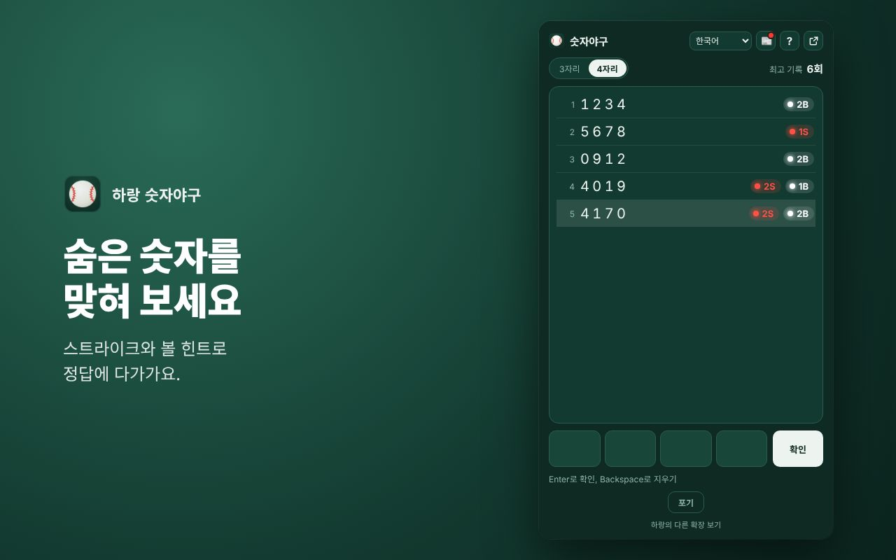

숫자야구 규칙
- 컴퓨터가 서로 다른 숫자 3개(또는 4개)로 된 비밀 숫자를 정해요. 0도 들어갈 수 있어요.
- 숫자를 입력하면 힌트가 나와요. 스트라이크(S)는 숫자와 자리가 모두 맞은 것, 볼(B)은 숫자는 맞지만 자리가 다른 것이에요.
- 예를 들어 정답이 352이고 325를 입력하면 3은 자리까지 맞아서 1S, 2와 5는 자리만 달라서 2B → 1S 2B예요.
- 모든 자리를 맞히면(3S 또는 4S) 끝! 적은 횟수로 맞힐수록 좋은 기록이에요.
잘하는 요령
- 첫 수는 123, 456처럼 겹치지 않게 넣어서 어떤 숫자가 들어 있는지 먼저 찾아요.
- 아무것도 안 맞은 결과(아웃)도 큰 힌트예요. 그 숫자들은 모두 지우면 돼요.
- 숫자를 다 찾은 뒤에는 자리만 바꿔 가며 스트라이크를 늘려요. 3자리는 보통 5~7번 안에 맞힐 수 있어요.
하랑 숫자야구 특징
- 3자리 · 4자리 모드
- 시도 기록이 표로 남아서 추리하기 쉬워요
- 모드별 최고 기록 저장
- 키보드로 입력 (Enter 확인, Backspace 지우기)
- 사이드패널 또는 팝업창으로
- 9개 언어 지원
- 계정·광고·추적 없음, 완전 무료
자주 묻는 질문
무료인가요?
네, 모든 기능이 무료이고 광고도 없어요.
어떤 브라우저에서 되나요?
크롬 웹스토어에서 설치하는 크롬 확장 프로그램이에요. 크롬 116 이상에서 사이드패널로 열려요.
개인정보를 수집하나요?
아니요. 설정과 기록은 내 컴퓨터에만 저장돼요.